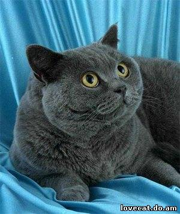

Британська короткошерста кішка
Британська короткошерста — одна з найстаріших порід кішок.
$100
Перська кішка
Перські — порода кішок зі спокійним, м'яким, рівним характером, спокійнішим, ніж у короткошерстих порід, їхні рухи розмірені й сповнені гідності.
$140

Абіссинська кішка
Абіссінська — порода кішок, що має особливе забарвлення, схоже на забарвлення зайців або кроликів. На тілі немає ніякого малюнка.